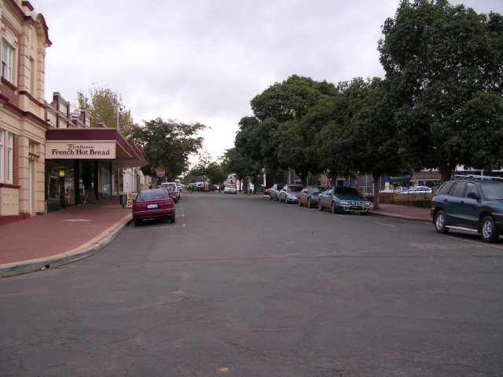
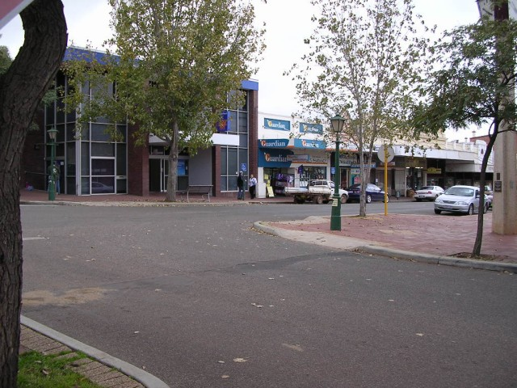

Numbers on the map represent the location where the photographs were taken. Scroll down to view the photographs.
Narrogin (GP Variant) - Federal Street (North)
|| Contents || Clayton / Lefroy / Lock | Jersey / Glyde / Forrest | Federal / Fairway | Federal || Home ||
Numbers on the map represent the location where the photographs were taken. Scroll
down to view the photographs.
Return to racingcircuits.net's Photo Archive Main Index

25 - Final section of Fairway Street, approaching croassroads with
Federal Street.

26 - Right turn into Federal Street.

27 - Federal Street.

28 - Federal Street, approaching kink

29 - Kink on Federal Street.

30 - Continuing along Federal Street.

31 - Left turn into Clayton Street.

32 - Clayton Street. Heading back to start/finish.
Photographs and Text ©Neil Fackerell. Reproduced here with kind permission.